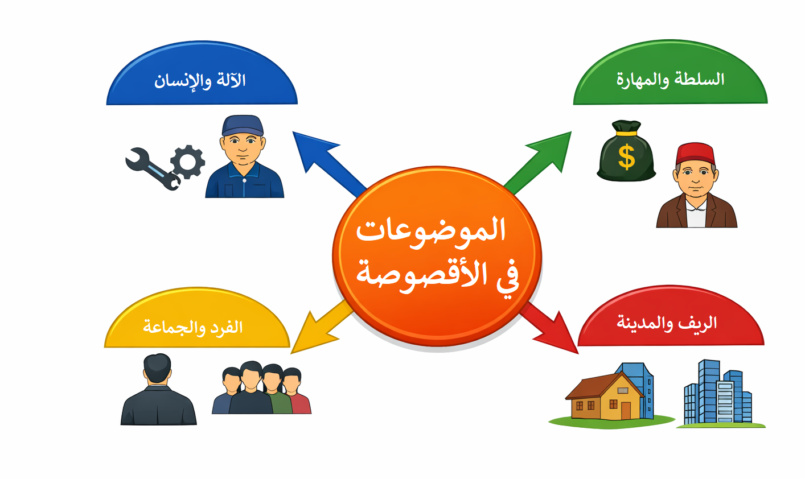

قصة "المكنة" ليوسف إدريس
الدرس الأول: تحليل أقصوصة "المكنة" من مجموعة "مختارات قصصية"
التقديم
تُمثّل أقصوصة "المكنة" للكاتب المصري يوسف إدريس نموذجاً بارزاً في الأدب الواقعي، حيث يجسّد من خلالها صراع الإنسان مع الآلة، ويكشف عن تحوّلات المجتمع الريفي أمام التحديث الصناعي. تنتمي الأقصوصة إلى مجموعة "مختارات قصصية" الصادرة سنة 1988، وتدور أحداثها حول عامل مكنة الطحين "الأسطى محمد" وعلاقته المعقدة بالمكنة، وصدامه مع صاحبها "الحاج طه".
يجمع النص بين عمق التجربة الإنسانية ودقّة التصوير الفني، مما يجعله لوحة سردية تتجاوز حدود الحكاية إلى التأمل في مصير الإنسان العامل وعلاقته بالتقنية والسلطة.
📖 معلومات عن الكاتب
- الاسم: يوسف إدريس
- الميلاد: 1927، قرية البيّوم بمحافظة الشرقية، مصر
- المهنة: طبيب ثم كاتب (أقصوصة، رواية، مسرحية، مقالة)
- الوفاة: 1 أوت 1991
- أعمال بارزة: أرخص ليالي (1954)، جمهورية فرحات (1956)، حادثة شرف (1958)، آخر الدنيا (1961)، العسكري وقصص أخرى (1962)، روايات: الحرام (1959)، العيب (1962)، البيضاء (1966).
📚 معلومات عن الكتاب
- العنوان: مختارات قصصية
- الناشر: دار الجنوب للنشر – تونس
- سنة النشر: 1988
- المحتوى: يضم قصصاً مختارة من أعمال يوسف إدريس، منها قصة "المحور الرابع" التي وردت في الصفحات 141–148.

ملخص القصة
تدور أحداث القصة حول "الأسطى محمد"، العامل الماهر الوحيد القادر على تشغيل مكنة طحين عتيقة في إحدى القرى. ارتبط محمد بالمكنة روحياً، فكانت بالنسبة إليه أكثر من مجرد آلة، إنها كيانه وملاذه بعد أن فقد زوجته وهجره ابنه. يتميز محمد بخبرة تقنية عالية، ويعرف أسرار المكنة التي لا يعرفها غيره، مما جعل أهل القرية يعتمدون عليه كلياً.
يظهر "الحاج طه" مالك المكنة، وهو تاجر نفعي لا يفهم في التقنية شيئاً، لكنه يريد استغلال المكنة لتحقيق أقصى ربح. تنشأ بينه وبين محمد صراعات متكررة، تنتهي بطرد محمد من عمله بعد أن أهانه طه. يحاول الحاج طه بعد ذلك تشغيل المكنة بعمال آخرين، لكنهم يفشلون جميعاً. وأخيراً، يأتي "أسطى جديد" من المدينة، شاب أنيق وواثق، يتمكن من تشغيل المكنة بسهولة. تنهار معنويات محمد وهو يرى المكنة تعمل بدون أن يكون هو مشغّلها، وتنتهي القصة بمشهد مأساوي يجسّد انكساره.
المصدر: يوسف إدريس، مختارات قصصية، دار الجنوب للنشر - تونس 1988، ص 141-148
شرح المفردات
| المفردة | الشرح |
|---|---|
| الأسطى | المعلم أو الصانع الماهر في حرفته، لفظ عامي من أصل تركي |
| المكنة | الآلة، وتقصد هنا آلة طحن الحبوب التي تعمل بالمحرك |
| البستم | المكبس، جزء من المحرك يتحرك داخل الأسطوانة |
| الحدافة | عجلة ثقيلة تثبت على عمود المحرك لتنظيم دورانه |
| الوابور | محرك يعمل بالبخار أو بالوقود |
| الطارة | قرص ينقل الحركة من المحرك إلى المكنة بواسطة سير |
| الترعة | قناة مائية صغيرة تتفرع من النهر للري |
أسئلة الفهم
1- يمكن تقسيم النص إلى مقاطع كبرى. ضع عنواناً لكل مقطع.
المقطع الأول: تقديم المكنة كرمز غامض ومقدّس في القرية.
المقطع الثاني: تصوير علاقة الأسطى محمد بالمكنة (ولع، مهارة، معاناة).
المقطع الثالث: الصراع مع الحاج طه الذي يطرده من العمل.
المقطع الرابع: النهاية المأساوية حين ينجح الأسطى الجديد في تشغيلها وانهيار محمد.
2- حلل البرنامج السردي للأسطى محمد (التحفيز، الكفاءة، الإنجاز، الجزاء).
التحفيز القصصي: ولعه بالمكنة لأنها كل دنياه، وهي تعويض عن فقد الزوجة والابن العاق.
الكفاءة: خبرة تقنية عالية، يعرف أسرارها ويكتشف أعطالها بالسمع والنظر، يسيطر على تفاصيلها.
الإنجاز: تشغيلها رغم صعوبتها، توفير الطحين للناس، احتكار المعرفة التقنية.
الجزاء: الطرد من عمله، خسارة مكانته، انهيار رمزي أمام نجاح الأسطى الجديد القادم من المدينة.
3- قارن بين البرنامج السردي للحاج طه والبرنامج السردي للأسطى محمد.
الحاج طه:
- التحفيز: دافع اقتصادي، استغلال المكنة للربح.
- الكفاءة: ضعيفة، يعتمد على غيره.
- الإنجاز: محاولة فرض سلطته، ثم نجاحه أخيراً عبر الأسطى الجديد.
- الجزاء: فقدان ثقة الناس، ثم استعادة السيطرة على المكنة بفضل المدينة.
العلاقة بين البرنامجين: علاقة صراع بين التقنية/الخبرة (محمد) والسلطة/المال (طه). ينتصر المال في النهاية عبر الاستعانة بالمدينة.
أطالع
1- كيف تجسّدت العلاقة بين الإنسان والآلة في شخصية الأسطى محمد؟
تجسّدت العلاقة بين الإنسان والآلة في شخصية الأسطى محمد كعلاقة وجودية: المكنة لم تكن مجرد أداة عمل، بل أصبحت هويته وكيانه. لقد حلّت محل الأسرة، وصارت مصدر قوته ومكانته الاجتماعية. هذا يعكس الاغتراب الإنساني أمام التقنية.
2- يمثل الأسطى الجديد القادم من المدينة رمزاً للتحديث. كيف عالج النص هذه القضية؟
عالج النص قضية التحديث عبر شخصية الأسطى الجديد: شاب من المدينة، مظهره نظيف، واثق، يتعامل مع المكنة ببرود تقني. نجاحه يمثل انتصار الحداثة على الخبرة التقليدية، لكن النص يطرح سؤالاً: هل هذا الانتصار إيجابي؟ فمحمد ينهار، والقيم الإنسانية تتراجع أمام منطق التقنية.
بمناسبة النص
الحقول المعجمية
استخرج من النص مفردات تنتمي إلى الحقول المعجمية التالية:
حقل الآلة والتقنية: المكنة، البستم، الوابور، الحدافة، الطارة، الزيت، المدخنة.
حقل الإنسان والجسد: وجه، ذراع، شارب، لحيته، العرق، الغيظ، الابتسامة.
حقل الطبيعة والريف: الشجرة، الخليج، الترعة، الأرض، الحطب، الأقفاص.
حقل الاجتماع: أهل القرية، الحج طه، الأسطوات، النساء، الزبائن.
حقل الانفعال النفسي: الغضب، الكبرياء، القلق، السخرية، الحزن، الفرح.
اللغة والأسلوب
السؤال: ما خصائص اللغة التي استخدمها يوسف إدريس في هذه الأقصوصة؟
تتميز لغة الأقصوصة بمزيج فريد من الفصحى والعامية المصرية، مما يحقق: الواقعية، الدقة التقنية، الحسية (وصف الروائح والأصوات)، والانفعالية (لغة تعكس الغضب والحزن والسخرية).
✨ القسم الأوّل: البرنامج السردي
بناء الأقصوصة
- تقديم المكنة كرمز غامض ومقدّس في القرية.
- تصوير علاقة الأسطى محمد بها (ولع، مهارة، معاناة).
- الصراع مع الحاج طه الذي يطرده.
- النهاية المأساوية حين ينجح الأسطى الجديد في تشغيلها.
البرنامج السردي للأسطى محمد
- التحفيز القصصي: ولعه بالمكنة لأنها كل دنياه، تعويض عن فقد الزوجة وابن عاق.
- الكفاءة: خبرة تقنية عالية، يعرف أسرارها، يسيطر على تفاصيلها.
- الإنجاز: تشغيلها رغم صعوبتها، توفير الطحين للناس.
- الجزاء: الطرد من عمله، خسارة مكانته، انهيار رمزي أمام نجاح الأسطى الجديد.
البرنامج السردي للحاج طه
- التحفيز: دافع اقتصادي، استغلال المكنة للربح.
- الكفاءة: ضعيفة، يعتمد على غيره.
- الإنجاز: محاولة فرض سلطته، لكنه يفشل مراراً.
- الجزاء: فقدان ثقة الناس، ثم نجاحه أخيراً عبر الأسطى القادم من المدينة.
👤 القسم الثاني: بناء الشخصية
أصناف الشخصيات ومقومات الهوية
رئيسية: الأسطى محمد (فني، معزول، متشبث بالمكنة)، الحاج طه (تاجر، نفعي، سلطوي).
ثانوية: الأسطى القادم من المدينة (رمز المدينة والتحديث)، أهل القرية (جمهور متفرج، متعاطف مع محمد).
الخصائص المادية والمعنوية
- محمد: جسد متعب، وجه محروق، شخصية عنيدة.
- طه: متسلط، متوتر، نفعي.
- الأسطى الجديد: شاب، مظهر نظيف، ثقة.
الأحوال النفسية والأعمال المؤثرة
محمد: ولع، عناد، كبرياء، قلق داخلي. طه: خوف، غضب، إصرار. أهل القرية: إعجاب، تعاطف، سخرية من طه.
الأعمال المؤثرة: طرد محمد، فشل الأسطوات، نجاح الأسطى الجديد.
🖼 القسم الثالث: الوصف
المواضيع الوصفية واللغة والتنظيم
المواضيع الوصفية: المكنة، جسد محمد، الشاي، وجوه الناس.
الصفات المسندة: تقنية (البستم، الحدافة)، عامية (اللعن، الحقد)، حسية (رائحة الفاز).
لغة الوصف: مزيج بين لغة تقنية دقيقة ولغة عامية شعبية.
تنظيم الوصف: يبدأ بالآلة، ينتقل إلى محمد، ثم إلى المشهد الجماعي. دوره يرسّخ العلاقة الرمزية بين الإنسان والآلة.
💡 القسم الرابع: القضايا المضمونية
المال والأخلاق – الريف والمدينة – التواصل الاجتماعي
- المال والأخلاق: طه يرمز للمال، محمد يرمز للأخلاق المهنية.
- الريف والمدينة: الأسطى الجديد من المدينة يكسر احتكار محمد.
- التواصل الاجتماعي: فشل التواصل بين محمد وطه، نجاح التواصل بين محمد والناس.
📖 القسم الخامس: السارد
نوع السارد وسمات الخطاب
نوع السارد: سارد خارجي عليم، يصف بدقة ويكشف الداخل النفسي للشخصيات.
سمات الخطاب: لغة عامية، أقوال مباشرة، تعليقات شعبية.
حركة عين السارد: من المكنة إلى محمد، ثم إلى الصراع مع طه، وصولاً إلى الطرد.
الهم الأساسي: إبراز مأساة الإنسان أمام السلطة والآلة.
📚 التعرف إلى المحاور الأساسية في الأثر
الحقول المعجمية
- حقل الآلة والتقنية: المكنة، البستم، الوابور، الحدافة، الطارة، الزيت، المدخنة.
- حقل الإنسان والجسد: وجه، ذراع، شارب، لحيته، العرق، الغيظ، الابتسامة.
- حقل الطبيعة والريف: الشجرة، الخليج، الترعة، الأرض، الحطب، الأقفاص.
- حقل الاجتماع: أهل القرية، الحج طه، الأسطوات، النساء، الزبائن.
- حقل الانفعال النفسي: الغضب، الكبرياء، القلق، السخرية، الحزن، الفرح.
الحقول المتواترة: يظهر حقل الآلة بشكل متكرر، يليه حقل الانفعال النفسي، ثم حقل الاجتماع.
الموضوعات المطروقة وتصنيفها
- علاقة الإنسان بالآلة
- الصراع بين الخبرة والسلطة
- عزلة الفرد أمام الجماعة
- الريف في مواجهة المدينة
تصنيف الموضوعات: تقنية/مهنية، اجتماعية/اقتصادية، نفسية/وجودية.
العناوين المقترحة
"الآلة والإنسان"، "السلطة والمهارة"، "الريف والمدينة"، "الفرد والجماعة".
✍️ تلخيص الأثر
قصة الشخصية
- الأسطى محمد: رجل وحيد، فقد زوجته وابنه، وجد في المكنة ملاذه وكيانه. يتحول من رمز القوة إلى رمز الهزيمة حين ينجح الأسطى الجديد.
- الحاج طه: تاجر نفعي، يسعى للربح، يفتقر للخبرة، ينجح أخيراً بفضل المدينة.
- أهل القرية: متعاطفون مع محمد، ساخرون من طه، جمهور يراقب الصراع.
أزمنة القص وتنظيم الأحداث
أزمنة القص: السرد يتدرج من الماضي إلى الحاضر، ثم إلى لحظة التحول (الطرد ونجاح الأسطى الجديد).
تنظيم الأحداث: تقديم المكنة، علاقة محمد بها، الصراع مع طه، فشل الأسطوات، نجاح الجديد، سقوط محمد.
الأساسي والكمالي: الأساسي هو الصراع بين محمد وطه، والكمالي وصف الشاي، الترعة، الأقفاص.
🧩 الخطاطة البصرية
في المركز دائرة بعنوان "الموضوعات في الأقصوصة"، ومنها تتفرّع أربعة محاور: الآلة والإنسان، السلطة والمهارة، الفرد والجماعة، الريف والمدينة. ترتبط بأسهم توضح التداخل بين التقنية والإنسان، وبين السلطة والجماعة.
🧩 الهيكل العام للمقال
| القسم | المحتوى المقترح | الهدف |
|---|---|---|
| المقدمة | تقديم الأقصوصة وسياقها، التعريف بالكاتب، إبراز أهمية الجانب الفني والمضموني. | تمهيد للقارئ. |
| الجانب الفني | تحليل السرد، الوصف، الحوار، الزمن، المكان، الشخصيات، اللغة. | إبراز براعة الكاتب. |
| الجانب المضموني | علاقة الإنسان بالآلة، المال والأخلاق، الريف والمدينة، الفرد والجماعة. | الكشف عن الدلالات. |
| الخاتمة | العلاقة بين الشكل والمضمون، القيمة الفنية والإنسانية للأثر. | تأمل نقدي شامل. |
🎨 الجانب الفني (الأساليب ومقومات القص)
السرد والوصف والحوار
- السرد: سارد خارجي عليم، يصف بدقة ويكشف الداخل النفسي.
- الوصف: تقني وحسي، يجمع بين لغة الآلة ولغة الريف.
- الحوار: واقعي، قصير، يعكس التوتر والعلاقات الاجتماعية.
- الزمن والمكان: زمن دائري مرتبط بدوران المكنة، مكان مغلق يرمز للعزلة.
- اللغة: عامية ممزوجة بالفصحى، توحي بالواقعية.
💡 الجانب المضموني (القضايا)
الإنسان والآلة – المال والأخلاق – الريف والمدينة – الفرد والجماعة
- الإنسان والآلة: المكنة رمز للتقنية التي تسيطر على الإنسان.
- المال والأخلاق: الحاج طه يجسّد الجشع، والأسطى محمد يمثل الإخلاص المهني.
- الريف والمدينة: الأسطى الجديد من المدينة يرمز إلى التحديث.
- الفرد والجماعة: محمد يعيش عزلة روحية رغم وجوده وسط الناس.
🧠 التركيب النهائي
تفاعل الشكل والمضمون يجعل الأقصوصة لوحة فنية متكاملة: الأسلوب الواقعي يخدم الفكرة الاجتماعية، اللغة الشعبية تعمّق الإحساس بالمكان، والصراع الفني يعكس أزمة الإنسان أمام التحوّل الصناعي والاجتماعي.
🖋️ المقال النقدي حول الأقصوصة "المكنة"
المقدّمة
تُعدّ الأقصوصة «المكنة» نموذجاً بارزاً في الأدب الواقعي المصري، حيث يجسّد يوسف إدريس من خلالها صراع الإنسان مع الآلة، ويكشف عن تحوّلات المجتمع الريفي أمام التحديث الصناعي. يجمع النص بين عمق التجربة الإنسانية ودقّة التصوير الفني، مما يجعلها لوحة سردية تتجاوز حدود الحكاية إلى التأمل في مصير الإنسان العامل.
🎨 الجانب الفني: الأساليب ومقومات القص
- السرد: سارد خارجي عليم يصف بموضوعية ويكشف أعماق الشخصيات.
- الوصف: تقني دقيق ممزوج بلغة حسية عامية.
- الحوار: قصير مشحون بالتوتر.
- الزمن والمكان: دائري ومغلق يرمز للعزلة.
- اللغة: مزيج من الفصحى والعامية.
💡 الجانب المضموني: القضايا والدلالات
- الإنسان والآلة: المكنة كائن حيّ يشارك محمد حياته.
- المال والأخلاق: طه جشع، محمد إخلاص.
- الريف والمدينة: الأسطى الجديد رمز للتحديث.
- الفرد والجماعة: عزلة محمد وضعف التضامن.
التركيب والخاتمة
يجمع يوسف إدريس بين الشكل والمضمون في توازن دقيق؛ فواقعية السرد تخدم الفكرة الاجتماعية، والصراع الفني يعكس أزمة الإنسان. إن الأقصوصة «المكنة» ليست مجرد حكاية عن عامل وآلة، بل تأمل في مصير الإنسان حين يفقد سلطته على أدواته، وفي انهيار القيم أمام منطق الربح والحداثة.
✎ ✍ ✎